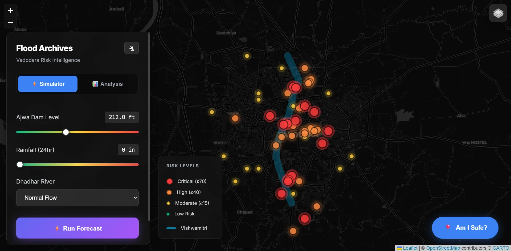
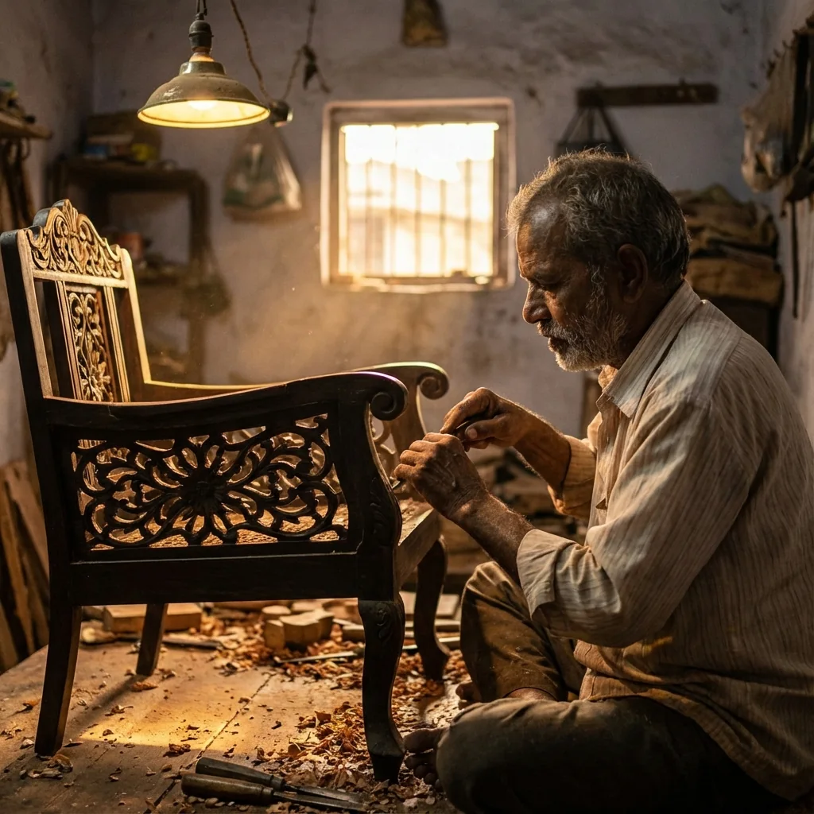

Products shaped by real constraints, questions that took longer than a launch, and the decisions that changed what each project became.
Back to the portfolio evolutionI saw potential in ScaleDown’s website, redesigned it to show HASTE in action, and sent the concept to the team.
Cost per million tokens
$0.05ScaleDown
HASTE compression
Add text. Compress it. See what remains.
Open the redesignIt began with a question people were asking during the monsoon: “Is my area safe?” The first useful answer was a record of what had actually happened there.

Fifty locations, records from 2019–2025, and a map that makes that history local. The simulator grew from the archive, but historical evidence is not an official warning or a verified forecast.
Explore Flood Archive
Discovery is only the beginning. The product page has to make room for the artisan’s profile, place, and craft.
Listing the work, managing stock, and handling orders matter as much as presenting a beautiful object to a buyer.
Reading is the visible part. Source context and the work before publication make that reading worth returning to.
The source should stay attached to the story.
Follow the work backward from a published brief.
Two papers shared on ResearchGate, on the human and technical sides of security in transition.
Writing on the security transition now underway: its algorithms, its infrastructure, and the people who have to make the change.